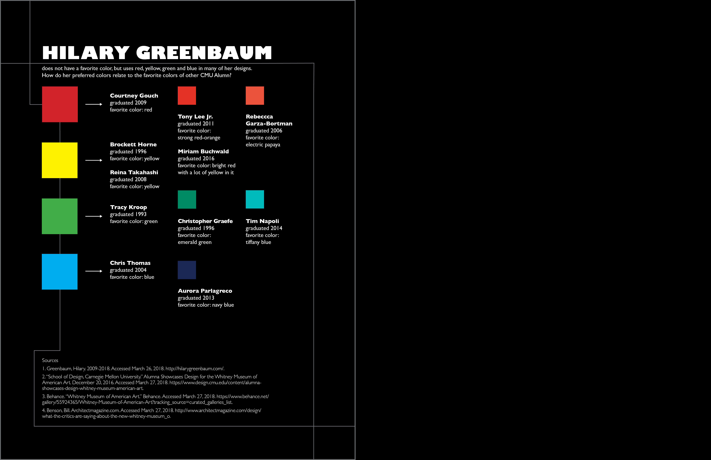
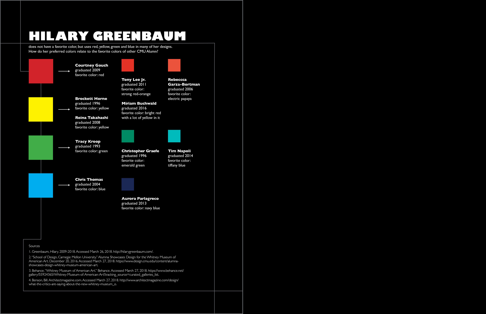

This project was made for the class ‘Designing Communications for Interactions.’ Our class created a collection of zines on CMU Design Alumn. I wrote and designed this biography of Hilary Greenbaum with the aim of communicating the information in a clear, engaging manner that also represents the style of her work.

 
